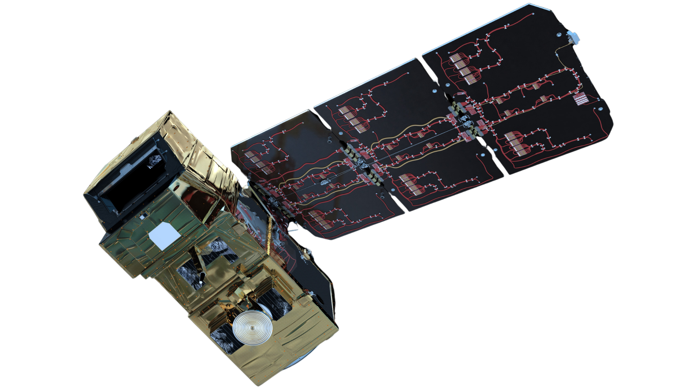
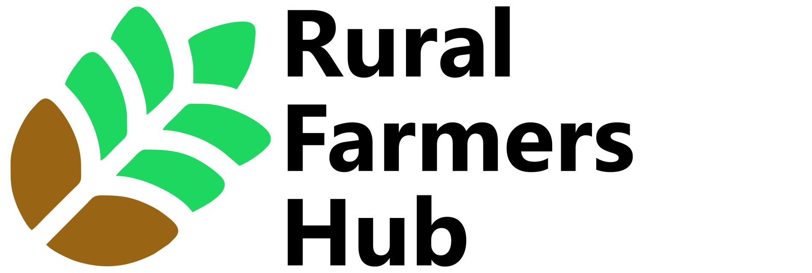
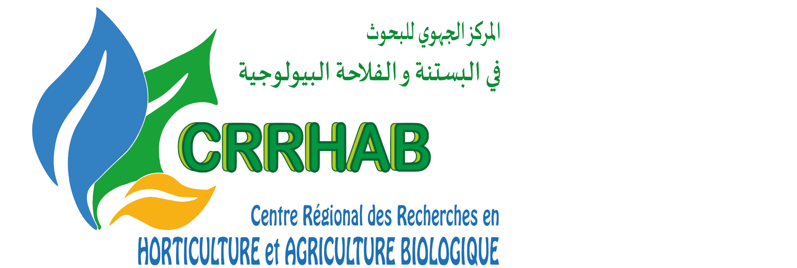

15+ Latest Soil Parameters in 10s.
Good soil intelligence lead directly to better action. You get access, speed, and clarity right now, because "weeks later" is too late for many field decisions

Continuous soil audit by AI.
Unknown soil conditions are expensive, they are based on habit, not need, resulting in: Wasted spend, Hidden deficiencies, Yield gaps, and Wrong input timing.

Satellite-based Soil Intelligence.
Turns farm coordinates into actionable soil intelligence, so farmers, cooperatives, fertiliser teams, and public programs can make better decisions with confidence.

Farmers & Co-ops
You've been guessing. Here's what knowing feels like.
Farmers lose 30–50% of yield potential every season — not from bad farming, but from bad data. Most fertiliser decisions are made by habit. aSpace gives you 15 soil parameters and precise recommendations in 10 seconds. Only coordinate. No guessing.

Fertiliser Companies
Your agronomists visit hundreds. Satellites can cover millions.
Farmers know when advice doesn't match their land. Trust erodes, and loyalty follows. aSpace gives your agronomic layer the soil data to back every recommendation — linked to your products, your brand, and your existing farmer network. 5–10× more reach. Same team. Same budget.

Public Programs & Carbon
Regulators want soil data at national scale. The infrastructure didn't exist — until now.
EU CAP, CBAM, and the US Soil Health Act demand continuous, verified soil intelligence. Traditional testing can't deliver it — fewer than one lab per 200 sq-km, weeks of wait, €20–30 per sample. aSpace monitors thousands of hectares continuously, with a full audit trail and compliance reports ready from day one.

From coordinate to complete soil intelligence.
Enter your farm location.
That's it. A GPS coordinates or farm boundary is all aSpace needs to begin. No soil samples. No equipment. No technician visit. Works on any phone or browser, from anywhere in the world.
Learn more →Our AI reads your soil from orbit.
aSpace fuses multi-band satellite imagery — spectral, thermal, and radar — through trained AI models built on over 1 million soil data points. The system reads nutrient levels, pH, organic matter, and more, calibrated against lab benchmarks.
Learn more →15+ soil parameters. Instant recommendations.
Your report arrives in 10 seconds: NPK levels, pH, organic matter, and 12 additional parameters — plus fertilizer recommendations by type, quantity, application timing, and method. Readable by farmers. Usable by agronomists. Exportable for compliance.
Learn more →Your soil intelligence updates itself.
You gain the clarity to make confident, evidence-based decisions — faster responses, reduced costs, better outcomes.
Learn more →Lab-grade accuracy. Zero contact. Global coverage
We delivers the same quality of insight in seconds, at a fraction of the cost. Our AI model — trained on 1+ million verified soil data points — is been benchmarked against laboratory results across multiple countries and crop systems.
15+
Soil parameters measured per report: NPK, pH, organic matter, micronutrients, and more
10 s
From coordinate to complete analysis. Faster than any field test, any sensor, any lab
1M+
Verified soil data points in training set, founded in every recommendation
Trusted by the programs and organisations that raise the bar for agricultural technology




"aSpace gave our program a soil intelligence layer we couldn't have built in-house — continuous, auditable, and ready for compliance reporting, soil analysis, and ag extension services from the first deployment."
— Partner, Rural Farmers Hub